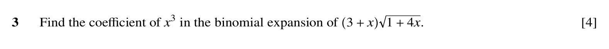
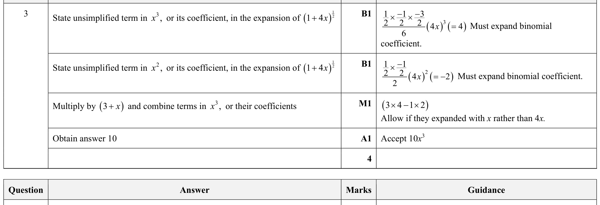

Paper 31summer23 Q3
Algebra
Exam Training is self-marked practice. It helps you prepare, but it does not replace Checked Practice evidence unless your teacher says so.

Hint
Expand sqrt(1 + 4x) up to the x^3 term first, then multiply by 3 + x and collect the x^3 coefficient.
Reveal Answer
